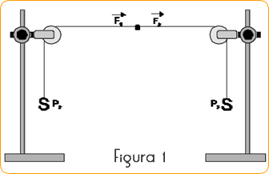
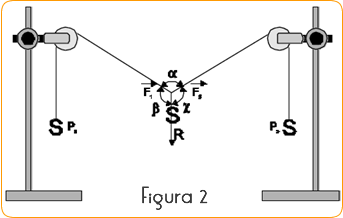
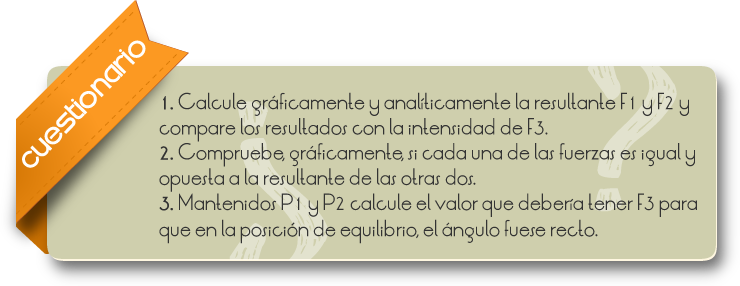
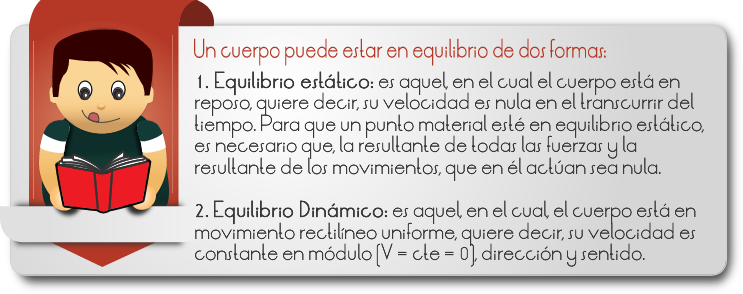

El término equilibrio puede referirse:
1. A una situación específica en que un sistema físico, biológico, económico o de otro tipo en el que existen diferentes factores o procesos, cada uno de los cuales son capaces de producir cambios por sí mismo, pero que puestos en conjunto no producen cambios en el estado del sistema a lo largo del tiempo.
2. A una situación en la que ocurre un proceso estacionario.
3. A una situación que sucede simultáneamente a otra.
Tipos de Equilibrio.
Equilibrio termodinámico: situación que se da en un sistema físico (es decir, un sistema al que podemos atribuir una energía interna) cuando todos factores exteriores y/o procesos internos no producen cambios de presión, temperatura u otras variables macroscópicas.
Equilibrio químico: cuando una reacción química de transformación ocurre al mismo ritmo que la transformación inversa, y por tanto no se producen cambios en la cantidad de cada compuesto.
Equilibrio mecánico: cuando las sumas de fuerzas y momentos sobres todo y cada una de las partes del cuerpo se anulan.
Comprobar la alteración del equilibrio de los cuerpos bajo la acción de fuerzas y utilizar rondanas para orientarlas.
1) Proceda al montaje del material conforme indica la Figura 1. Prenda las rondanas en las astas y coloque el cordel sobre las mismas. Dar un nudo, en las puntas del cordel, para permitir que sean presos a las masas aferidas P1 y P2.

2) Haga una marcación del punto medio "O" en el cordel con cinta adhesiva.
3) Compruebe, si hay alguna relación, entre las fuerzas F1 F2 cuando un punto cualquiera del cordel esté en equilibrio.
4) Disloque una de las poleas para arriba y para abajo y compruebe si hay cambio en el estado de equilibrio del punto "O" (Figura1).
5) Utilice un peso P3, y aplique al punto "O" una tercera fuerza F3 (figura2).
6) Mida los ángulos formados, use el transportador y responda el cuestionario.


Comentarios
